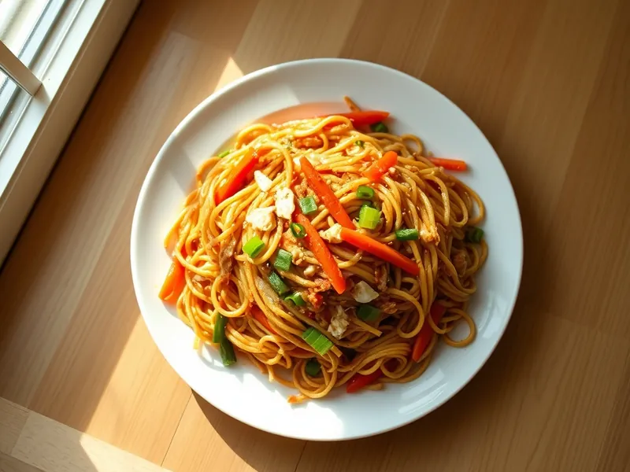

Фото: Иллюстрация ИИ, Cloudflare Workers AI
Жареные макароны с овощами по-китайски
Вчерашние макароны, обжаренные на сильном огне с капустой, морковью, яйцом и соевым соусом
20 мин2 порц.525 ккал на порциюБ 21 · Ж 18 · У 68Азиатская кухня
Продукты на 2 порц.
- Макароны варёные (остались)350 г
- Капуста белокочанная150 г
- Морковь1 шт
- Перец болгарский1 шт
- Яйцо куриное2 шт
- Чеснок2 зуб.
- Соевый соус2 ст. л.
- Растительное масло1 ст. л.
- Зелёный лук0,5 пучка
- Кунжутное масло по желанию1 ч. л.
Как готовить
- Нашинкуйте капусту тонко, морковь и перец соломкой, чеснок мелко, 6 минут.
- Разогрейте половину масла в сковороде на сильном огне, взбейте яйца и жарьте 1 минуту, помешивая, переложите в тарелку.
- Влейте остальное масло и жарьте морковь, капусту и перец 4 минуты на сильном огне, постоянно мешая, пока капуста не обмякнет по краям.
- Добавьте чеснок и макароны, жарьте 3 минуты, подбрасывая, чтобы макароны прогрелись.
- Влейте соевый соус, верните яйцо, добавьте зелёный лук и кунжутное масло, перемешайте 1 минуту и снимите с огня.
Совет. Сковорода должна быть очень горячей, иначе овощи потушатся, а не обжарятся. Можно добавить кусочки готовой курицы.